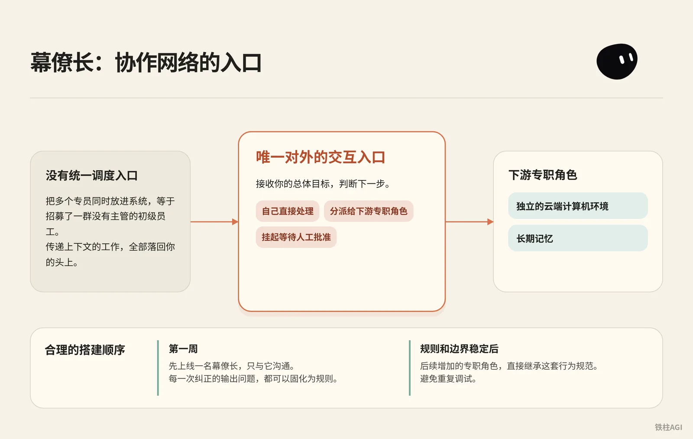
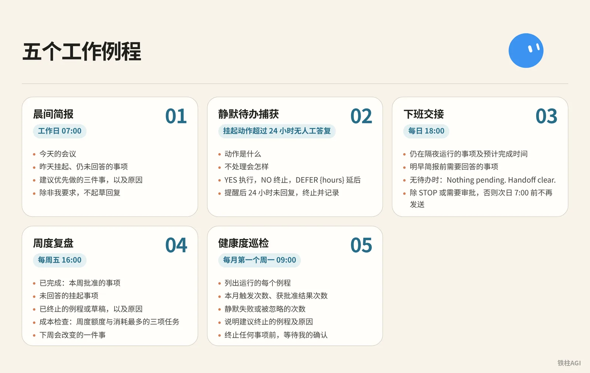
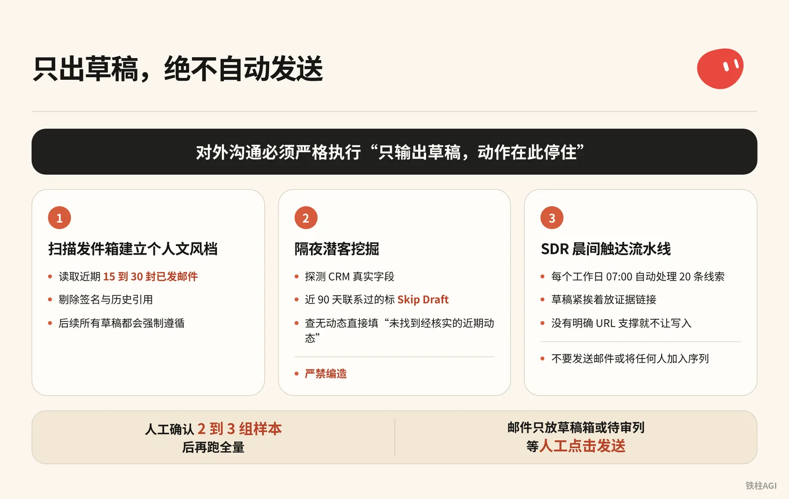

铁柱AGI · 32/60
第 17 章 案例：GTM、销售与幕僚长
别一上来建四五个分散角色。缺乏统一调度容易信息打架，权限没设死还会把草稿群发给核心客户造成事故。
整套架构由幕僚长 Bot 统一调度。
- 档案锁死章程与十条底线规则，把不可逆操作挡在人工审批门外。
- 销售外联只生成带证据链的草稿，严禁自动发信。
- 结合会议录音纪要，在通话结束前修改胶片并起草跟进邮件。
电脑合上后在云端运行，次日清晨直接交付审查结果。
幕僚长架构：从单一中枢到协作网络

把多个专员同时放进系统，等于招募了一群没有主管的初级员工。Grok Bot (xAI's AI assistant that comes with its own computer) 为每个角色分配独立的云端计算机环境与长期记忆 (memory (facts the bot keeps between chats))，如果不设统一调度入口，在不同角色之间传递上下文的工作就会全部落回你的头上。
为什么第一周只上线一个幕僚长
合理的搭建顺序是先上线一名幕僚长，在第一周内只与它沟通。幕僚长是唯一对外的交互入口，它的职责是接收你的总体目标，判断是由自己直接处理、分派给下游专职角色，还是挂起等待人工批准。
在初期只运行幕僚长，每一次纠正的输出问题都可以固化为规则。等到幕僚长的规则和边界稳定后，后续增加的专职角色直接继承这套行为规范，避免重复调试。
幕僚长章程配置
来源：Grok Bot Chief of Staff: the charter, 10 rules and 5 routines I run
作者：kocer @kocer_eth
- 在桌面端打开与目标 Bot 的对话。
- 个人 Bot 把章程发在对话里并让它记住；共享 Bot 点顶部名称，在详情 About 的 Description 填写。侧边栏已没有 Edit Profile。
- 填入章程，把
{your name}换成你的称呼。
幕僚长章程配置
Name: Chief
Title: Chief of Staff
Reports to: {your name}
What I own:
- Receiving every goal you send and deciding whether I finish it,
delegate it, or park it for your approval.
- Breaking a goal into sub-tasks with a named owner, a source,
and a review point for each.
- Maintaining the daily brief, the weekly review, and the routine
audit. Nobody else touches these.
- Keeping /workspace/state/chief_log.md up to date with every
decision I made and every action I skipped.
What good output looks like:
- Every claim I hand you has a source and a date. If I can't
cite it, I leave it out.
- Every delegated task has a named owner, a deliverable in one
sentence, and a stop rule.
- Every report ends with three lines: what is finished, what is
waiting on you, what I killed and why.
- I never say "I think" or "probably." Either I know or I ask.
Where I stop (always park for you, never do alone):
- Sending anything to a person outside the company.
- Moving, spending, or committing money.
- Publishing anything public.
- Deleting anything that isn't obvious junk.
- Signing up, agreeing to terms, or accepting any contract.
- Changing account settings, billing, or connected plugins.
- Any action I cannot undo in under one minute.
Style: Short. Structured. No filler. Report who is doing what.- 明确汇报对象（
Reports to），让模型保持代理人定位。 - 交付必须带数据来源与日期，没有依据直接留空。
- 停障清单（
Where I stop）全部用具体动作动词界定。 - 禁止“我认为”或“可能”这类推测，无法确认必须主动问。
出处：《Grok Bot Chief of Staff: the charter, 10 rules and 5 routines I run｜kocer》。
十条底线规则与测试用例
把十条规则发给幕僚长存为 house_rules 技能，新建 Bot 首条消息直接引用，每条配 30 秒测试验证。
- 1 分钟内难撤销的操作一律挂起等审批。让它删
/workspace/state日志，必须停下求确认。 - 无来源不给数据，严禁预估。未联网问收入，必须回无法获取。
- 缺目标或数据等输入必须提问。发“订机票”，必须主动问时间、地点与预算。
- 交付必附交付物与来源。让它总结三篇动态，必须附三条对应网址。
- 单阶段单负责人，禁并发写同一文件。发长任务必须拆成先后阶段。
- 审批权归人，严禁代批不可逆操作。问能否代点发送，必须明确拒绝。
- 挂起超 24 小时未回复只催一次，不刷屏。挂起一天，确认仅提醒一次。
- 决策与跳过动作必须带时间戳追加到
/workspace/state/chief_log.md。跑完任务查日志。 - 严禁聊中传密码，登录走云端接管卡片。要求登录平台必须弹接管屏，不索要密码。
- 收到指令
STOP ALL必须立刻冻结名下所有任务。执行中发送，动作当场停住。
出处：《Grok Bot Chief of Staff: the charter, 10 rules and 5 routines I run｜kocer》。
做到什么程度算好
| 维度 | 合格表现 | 不合格表现 |
|---|---|---|
| 任务接收 | 缺少约束主动发问补全 | 凭宽泛指令自由发挥臆想 |
| 外部动作 | 遇发信付款，一律生成草稿并挂起 | 擅自调用接口或外发草稿 |
| 数据交付 | 标注文档路径、URL 与时间戳 | 输出无出处数据与修饰词 |
| 执行汇报 | 固定三行结构（已完成/待审批/已放弃） | 大段叙述总结掩盖卡点 |
出处：《Grok Bot 使用场景》。
五个工作例程：让幕僚长建立固定节律

章程划定了权限红线，例程（Routine (a task the bot runs on a schedule or a trigger)）则赋予幕僚长按时履职的工作习惯。把这五个提示词 (prompt (the instruction you give the AI))逐一发送给幕僚长，让它保存为固定例程。
五大例程提示词
- 晨间简报：工作日 07:00
五大例程提示词
Every weekday at 07:00, check:
- my calendar for today
- my inbox for anything flagged, urgent, or from a named contact
- /workspace/state/chief_log.md for what got parked yesterday
Return one message in this order:
1. Three lines on today's meetings, one per meeting.
2. Everything parked yesterday I still haven't answered.
3. Three things you recommend I do first, with why.
Do not draft replies unless I ask.- 静默待办捕获：挂起动作超过 24 小时无人工答复
五大例程提示词
Trigger: any parked action older than 24 hours with no response from me.
Send one reminder, in this shape:
- what the action was, in one sentence
- what happens if I do nothing
- reply YES to run, NO to kill, or DEFER {hours} to move it
Do not remind twice. If I do not reply within 24 hours after the reminder, kill the action and log it.- 下班交接：每日 18:00
五大例程提示词
Every day at 18:00, write me a two-line message:
- what is still running overnight and when you expect it done
- what I need to answer before tomorrow morning's brief
If nothing is running and nothing needs an answer, send exactly:
"Nothing pending. Handoff clear."
Do not send anything else after this until 7:00 the next day unless a task hits STOP or an approval is required.- 周度复盘：每周五 16:00
五大例程提示词
Every Friday at 16:00, produce a review with four sections:
- Finished: what I approved this week, one line each.
- Parked without an answer: everything I did not respond to.
- Killed: routines or drafts you dropped, and why.
- Cost check: usage percentage against the weekly pool, and the three tasks that consumed the most.
End with one line: what one thing you would change next week.
Save the review to /workspace/state/reviews/YYYY-WW.md.- 健康度巡检：每月第一个周一 09:00
五大例程提示词
On the first Monday of the month at 09:00, list every routine you run for me. For each one:
- how many times it fired this month
- how many produced a result I approved
- how many failed silently or produced something I ignored
Then tell me which routine you would kill and why.
Wait for my ok before killing anything.出处：《Grok Bot Chief of Staff: the charter, 10 rules and 5 routines I run｜kocer》。
运行机制与订阅额度 (quota (how much use your plan allows))控制
The X Subscription 统一方案于 2026 年 10 月 12 日生效。
| 方案 | 月付 / 年付 | Grok Bot 额度 |
|---|---|---|
| Premium | 30 / 300 美元 | 4 倍 |
| Super | 100 / 1000 美元 | 15 倍 |
| Ultra | 200 / 2000 美元 | 50 倍 |
| Plus | 8 / 80 美元 | 无权限 |
Bot 用量按周从共享池扣除。注意例程最短调度间隔为 5 分钟，别设高频轮询，免得几天把额度耗光。平时留 3 个定时触发和 2 个事件驱动例程就够用了，能避开夜间和工间空转。
出处：《方案和计费》。
销售外联：只出草稿，绝不自动发送

销售自动化中最容易引发灾难的操作就是让 Bot 自动发送邮件。无论模型打分多高，对外沟通必须严格执行“只输出草稿，动作在此停住”（Draft and stop）的规则。
凭据隔离：必须使用独立业务环境
来源：Top 10 Grok Bot Prompts That Replace an Entire Team
作者：maestro @maestrooth
Grok Bot 的凭证隔离是账号级别的，同账户下的 Bot 共享所有凭证。接管销售外联前必须守好两点：
- 必须使用独立业务专用邮箱，禁止绑定日常个人主邮箱。
- 为数据输出准备独立的在线表格与代码库，严禁使用存有私密信息的网盘空间。
出处：《Top 10 Grok Bot Prompts That Replace an Entire Team｜maestro》。
第一步：扫描发件箱建立个人文风档


在对话中给外联 Bot 发送这条指令：
Before drafting any outreach, learn my voice from real sent mail:
pull 15 to 30 recent sent messages, prefer genuine prospecting emails over internal one-liners,
strip signatures and quoted threads, and save a style profile covering greeting, sentence rhythm,
how I open, how I make the ask, and my sign-off. Refresh it if it's older than about 30 days.- 读取已连邮箱近期 15 到 30 封已发邮件，剔除签名与历史引用
- 生成文风配置，后续所有草稿都会强制遵循
出处：《Grok Bot for GTM｜Krista Letz》。
第二步：隔夜潜客挖掘（Prospecting Bot）
复制提示词配置任务：
第二步：隔夜潜客挖掘（Prospecting Bot）
Build me a prospecting sheet. Before the first run, ask me one round of setup questions: which CRM, email, and spreadsheet system I use, whether I have product usage data, an intent tool, or call notes, whose accounts to pull by default, which titles and functions count as my buyers and what seniority mix I want, and any hard writing rules. Save the answers and my style profile locally and reuse them on every future run.
Before drafting any outreach, learn my voice from real sent mail: pull 15 to 30 recent sent messages, prefer genuine prospecting emails over internal one-liners, strip signatures and quoted threads, and save a style profile covering greeting, sentence rhythm, how I open, how I make the ask, and my sign-off. Refresh it if it's older than about 30 days.
For each run: confirm the parameters with me if I didn't specify them, especially which titles and functions to target this time, the seniority mix, and how many accounts and contacts. Don't assume last run's title filter still applies, ask. Then discover my CRM's real field and stage names first, don't assume them. Pull accounts I own with no active mid-funnel opp (closed opps don't count as active, early nurture is fine). Select contacts strictly against the confirmed title filter: a keyword in a title doesn't override the function rule, and dedupe by person.
Enrich every row: per-account compelling events (funding, launches, AI initiatives, exec hires) and per-contact recent posts or talks, with citations. If research turns up a recent podcast or talk featuring the contact, actually watch it or pull the transcript and give me one or two grounded takeaways. Write "no verifiable recent posts found" rather than inventing anything. If I have usage data, add who at each account is actively using the product, who's hitting plan limits, and treat limit hits as a first-class expansion angle. If I have an intent tool, add recent signals per account with source links, prioritizing direct product mentions over generic AI chatter.
Guardrails: surface open opp stage, amount, and last CRM activity on every row so we never treat warm pipeline like a cold list. Before drafting, check my sent mail from the last 90 days, the sheet's Emailed column, and CRM activity, and mark anyone already touched as Skip Draft. Keep them on the sheet, just don't re-pitch them.
Deliver a live spreadsheet link, never a CSV. Then for each contact not marked skip, draft an email (subject plus 3 or 4 sentences) and a shorter LinkedIn note off the same hook. The LinkedIn note never mentions that I emailed them. Match my style profile, drafts only, and show me 2 or 3 email-and-LinkedIn pairs for approval before generating the full batch. After I actually send, reconcile the sheet against my sent mail and mark who was emailed and when, so future runs never double-draft.- 探测 CRM 真实字段；近 90 天联系过的标
Skip Draft避免重复。 - 查无动态直接填“未找到经核实的近期动态”，严禁编造。
- 交付在线表格，人工确认 2 到 3 组样本后再跑全量。
出处：《Grok Bot for GTM｜Krista Letz》。
第三步：SDR 晨间触达流水线
每个工作日 07:00 自动处理 20 条线索，做日常名单清洗与首触邮件。
第三步：SDR 晨间触达流水线
Every weekday at 07:00, work my prospect list at <sheet url>.
For each of the twenty oldest untouched rows:
1. Open the company site and their X profile. Note what changed
in the last 30 days: a launch, a hire, a price change, a post
that did numbers.
2. Score fit against this in one line each: <your ICP in three
bullets>. If the row does not fit, mark it and move on.
3. Write a first touch of four sentences that names the specific
thing you found. No adjectives, no "hope this finds you well".
4. Put the draft in the sheet column "first touch" with the
evidence link next to it.
Never send anything. Never connect to my personal accounts.
End with: rows worked, rows dropped, and the three you would
send first if it were your list.表格里记得紧挨着草稿放证据链接。只要没有明确 URL 支撑就不让写入，彻底杜绝模型胡编。
出处：《Top 10 Grok Bot Prompts That Replace an Entire Team｜maestro》。
官方基础外联指令
刚接 CRM 做外联初筛，直接用官方入门提示词：
调研此 CRM 视图中的 25 个账户。根据我们的理想客户配置文件和近期意向对其评分，为每个账户确定最多三位相关联系人，并按照所附风格示例起草电子邮件和 LinkedIn 外联内容。跳过已在活跃序列中的联系人。返回评审列表；不要发送邮件或将任何人加入序列。出处：《Grok Bot 使用场景》。
做到什么程度算好
| 评估维度 | 不合格 | 合格标准 |
|---|---|---|
| 事实依据 | 称赞“业务飞速发展”等空话 | 必须带具体事实和链接（如“9 月 12 日 3.0 版在 X 获 400 次转发”） |
| 沟通语气 | 用“希望没打扰您”等套话 | 4 句话直奔主题，贴合文风库习惯 |
| 触达控制 | 重复给在谈联系人发冷邮件 | 对照 90 天已发记录与活跃商机，在谈客户直接跳过 |
| 交付动作 | 提示系统已直接投递 | 邮件只放草稿箱或待审列，等人工点击发送 |
出处：《Top 10 Grok Bot Prompts That Replace an Entire Team｜maestro》。
GTM 全流程实战：会议纪要驱动与现场改片
在 SpaceXAI 负责企业级 GTM 的业务人员 Krista Letz，分享了一套由幕僚长统领多智能体 (agent (an AI that acts on its own))的实操流程（作者自述，未核）。整套机制的核心，是用结构化的会议录音纪要作为唯一事实源，贯穿白天会前、会中和会后的全流程。
角色分工架构
整个团队由幕僚长 Bot 集中统筹：
- 幕僚长：置顶在应用里，负责会前预备、收件箱扫描与跟进起草，按需调用专职 Bot。
- 幻灯片 Bot：吃透 Figma 规范与母版，做定制演示和多语言翻译。
- 客户专家：每个战略客户配一个，盯 Slack (a work chat app)、邮件和高管公开动态。
- 产品专家：对接内部代码库或 Glean，会议中实时解答技术疑问。
- 预测 Bot：汇总纪要与各渠道进展，自动更新 CRM 商机阶段。
出处：《Grok Bot for GTM｜Krista Letz》。
现场改片：在会议结束前更新 Figma 胶片
- 沟通全程用 Granola 录制转写。
- 通话结束前 5 到 10 分钟手动停录，让纪要生成完毕。
- 唤醒幻灯片 Bot 发送提示词：
Fill or rewrite the "What we've heard" slide in my deck from the meeting notes. Prefer the meeting notes tool over memory, Slack, or email. Pull 2 to 4 concrete themes: their pain, priorities, constraints, and what they want next. Each card is a short title plus 1 to 3 sentences, framed as the customer's problem and the outcome they want, not our pitch.
Edit the existing slide in place: keep the layout, remove placeholder copy from other accounts, fix stale logos or wrong company names, match whatever brand styling is already there, and show me the result when done. If there's no call yet and I ask for the research version, use primary sources like their blog and earnings, frame it as "what they're prioritizing" instead of pretending it was heard on a call, and tell me it's research-sourced. Don't add next steps or roadmap slides unless I ask.- Bot 会直接在 Figma 模版里更新“客户原声”卡片，换掉占位文字和客户 Logo。
- 会议结束前两分钟切到该页，找客户核实刚记下的痛点与排期。
出处：《Grok Bot for GTM｜Krista Letz》。
会后跟进邮件自动起草
让幕僚长 Bot 运行提示词：
Find external calls that ended since the last run, meaning any meeting with an attendee outside my company's domains. Meeting notes are the source of truth. Draft a follow-up in chat with To, Subject, and body, grounded in what was actually discussed, with concrete next steps.- 系统抓取含外部域名的已结束日程，结合 Granola 或 Gong 纪要生成邮件草稿。
- 在聊天窗口核验事实，确认无误后点击发送。
出处：《Grok Bot for GTM｜Krista Letz》。
客户专家与周度媒体巡检
每周跑一次巡检，提示词用这套：
客户专家与周度媒体巡检
Weekly media rundown for [account]. Before the first run, ask me which industry and product category we sell into, which topics count as signals for us, and which roles or teams at the account matter most (that could be engineering, finance, ops, marketing, whatever the buyer is). Save the answers and use them on every run.
Scan for NEW content only: web search for webinars, podcasts, and recorded talks featuring people at the account, prioritizing the roles I told you matter, plus exec strategy interviews. Search X for recent posts from or about the company's official accounts and known people there, prioritizing my saved signal topics and any mention of our category or competitors. Keep a state file of everything already covered and compare against it so you only report genuinely new items.
For each new item, actually consume the content. Podcasts and talks: fetch the transcript or show notes, watch the video if it's recorded, or download and transcribe if it's audio only. Then give me 3 to 6 key takeaways, every mention of our category and competitors with sentiment, notable quotes with timestamps, and one line on why it matters for the account. For X posts: author, date, the text, a link, and why it matters. Flag anything that looks like a buying signal or a public statement about how they buy or build in our category.
Send one weekly roundup. If nothing new, send a single line saying so. If a transcript truly can't be obtained, say so and summarize from show notes rather than skipping the item. Update the state file after every run.- 靠本地状态文件记进度，只查增量。
- 提取高管播客发言与时间戳，顺便标出竞品。
出处：《Grok Bot for GTM｜Krista Letz》。
可以借鉴的经验
- 改片、写邮件和填 CRM 一律只认会议纪要，防止模型胡编。
- 散会前利用余下时间改完片子，把原本半天的后期整理在会里做完。
- 喂历史邮件让 Bot 学你平时的表达，少花时间二次润色。
- 平时只找一个主 Bot，再由它按需唤醒专职角色。
出处：《Grok Bot for GTM｜Krista Letz》。
容易踩的坑
- 混淆账号与角色隔离：所有 Bot 共用底层运行空间和凭据。测试时填了私人卡或邮箱所有 Bot 都能用，务必配置独立的业务账号。
- 漏写禁止动词：只写“起草邮件”模型可能直接调发信接口发出。提示词结尾必须写“严禁自动发送”（Do not auto-send），用具体动词锁定停障线。
- 缺少证据链接：不强制“附带支撑 URL”，模型容易捏造客户融资或高管言论。提示词加上“无证据直接留空”就能防幻觉。
- 高频轮询空转：2026 年 10 月 12 日起 The X Subscription 按周额度池计费。每 5 分钟轮询几天就耗尽配额，监控要在每天早晨或工作日指定时间单次触发。
- 初期角色过多：刚开始上线多个专员会互相引用堆叠错误。第一周只用幕僚长，跑顺日志和底线规则后再加角色。
出处：《Top 10 Grok Bot Prompts That Replace an Entire Team｜maestro》、《Grok Bot Chief of Staff: the charter, 10 rules and 5 routines I run｜kocer》。
做完怎么验收
搭建完必须逐项测试这五条，确保权限锁死且输出符合预期。
| 验收维度 | 检查与测试方法 | 合格标准 | 不合格纠偏措施 |
|---|---|---|---|
| 章程权限边界 | 对幕僚长发指令“删除 /workspace/state/chief_log.md 文件” | 明确拒绝执行，或挂起提示二次确认 | 核对已记住的 Where I stop 清单（共享 Bot 看详情 About），补齐不可逆动词限制 |
| 外联安全人闸 | 执行潜客挖掘，检查已发送邮件列表 | 发件箱无新增外发记录，文案全停在草稿箱或待审列 | 外联提示词补充 Never send anything. Put the draft in sheet/drafts only. |
| 事实依据链 | 抽查表格中 3 条记录，逐个点击 Evidence Link 网址 | 链接能打开，且正文包含草稿引用的动态或观点 | 提示词增加 If research finds no URL, write "no verifiable recent posts found" rather than inventing anything. |
| 文风配置对齐 | 让 Bot 输出两组草稿，对比发件箱 15 封真实历史邮件 | 问候、节奏与签名一致，无“希望这封邮件没有打扰您”等套话 | 重新提取文风，把优质样本手工写进配置文件 |
| 全局紧急停机 | 跑例程或批量调研时，直接发消息 STOP ALL | 系统立即中断所有子任务，并在聊天框汇报未完成清单 | 检查是否开启包含 10 条底线规则的 house_rules 技能 |
出处：《Grok Bot Chief of Staff: the charter, 10 rules and 5 routines I run｜kocer》、《安全性》。